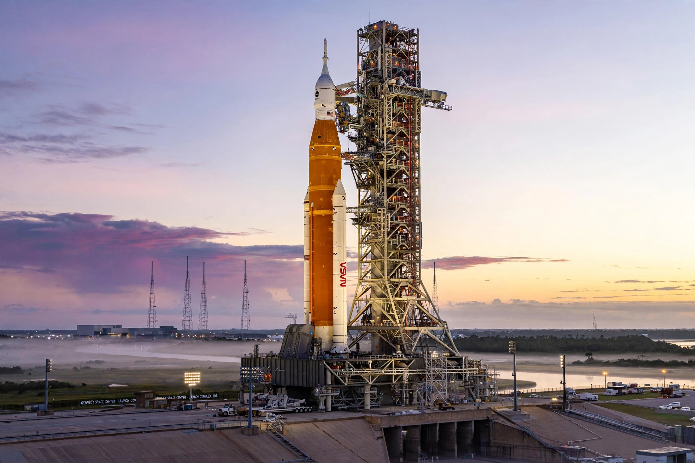

[Image: The SLS rocket on Launch Pad 39B at dawn]
The missions
- Artemis I — the uncrewed first flight of the Space Launch System (SLS) rocket and Orion spacecraft, flown in November–December 2022, looping around the Moon and back
- Artemis II — the first crewed Artemis flight, a free-return loop around the Moon with four astronauts (the crew announced in 2023: Reid Wiseman, Victor Glover, Christina Koch and Canada's Jeremy Hansen)
- Artemis III — the first crewed lunar landing of the campaign, targeting the Moon's South Pole region, using a commercial Human Landing System
The hardware
The Space Launch System is the most powerful rocket NASA has built, its core stage flanked by two solid rocket boosters; Orion is the crew capsule designed for deep-space missions. In lunar orbit, the planned Gateway station serves as an outpost for surface expeditions, and commercial landers (SpaceX's Starship HLS and Blue Origin's Blue Moon) ferry crews to the surface.
Why the Moon's South Pole
The lunar South Pole holds water ice in permanently shadowed craters — a resource that could one day be turned into drinking water, oxygen and even propellant, and a proving ground for living off the land on Mars.